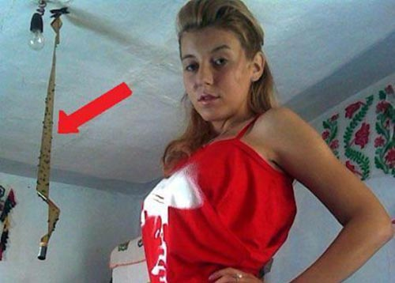
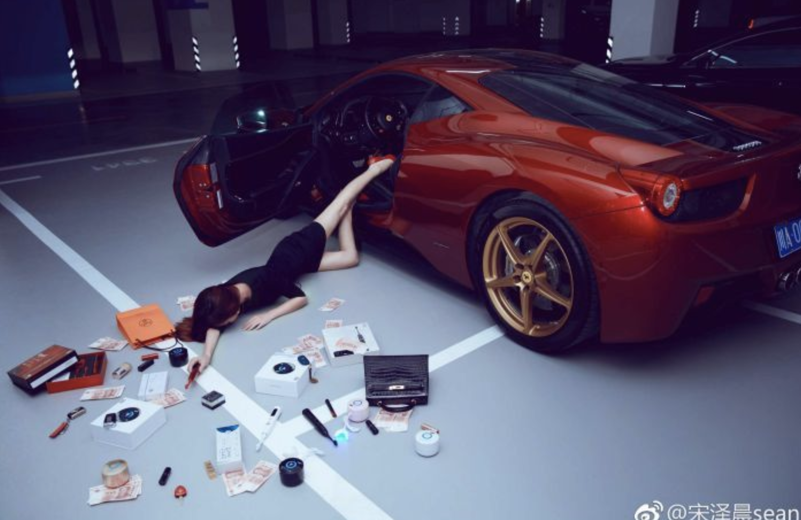
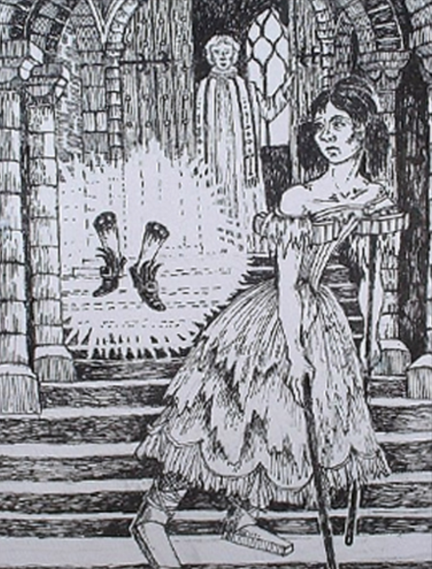
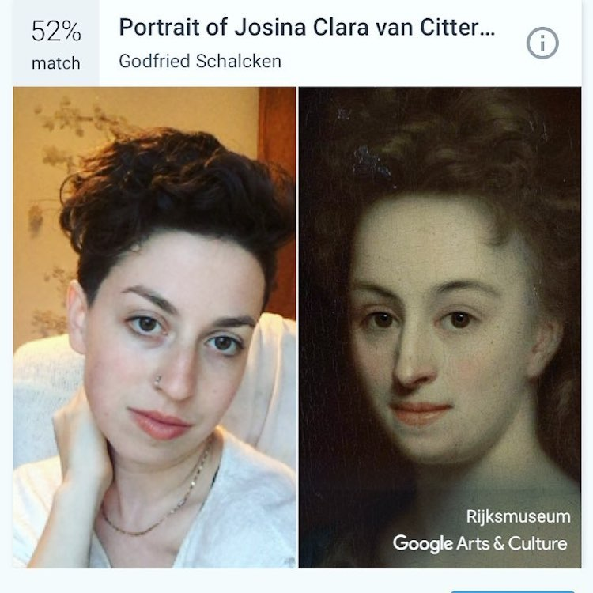
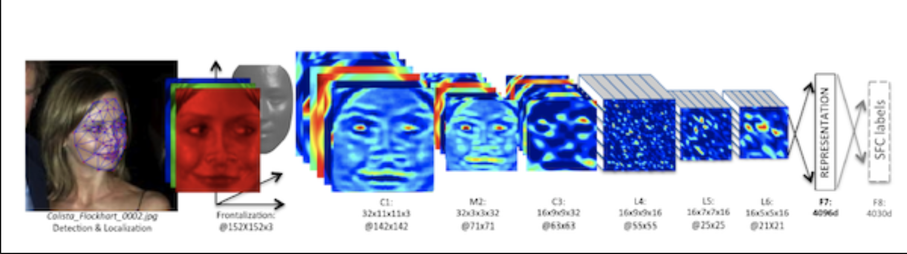

“No, you need to be in it too!”
“But I don’t really want to be in the selfie…”
“Why not? What is wrong with a selfie?”
“I… I don’t really know, it just feels stupid, I guess…”
I ended up still being in the selfie. It was a nice enough picture, which I’ve probably already deleted, I don’t even know anymore. The conversation though never left my mind. What is it about selfies that makes me not want to take one while we are living in a selfie obsessed society. Is it the act that makes me uncomfortable? It is the way selfies are seen in our contemporary society? Am I afraid to be called narcissistic? What is a selfie in the first place?
What is a selfie?
Selfies are, according to The Oxford Dictionary,“A photograph that one has taken of oneself, typically with a smartphone or webcam and uploaded to a social media website.”1 This description sums up the three key activities that are essential for the selfie, taking a photograph of oneself, using a camera on a smartphone and sharing this image on different social media platforms. Editors of The Oxford Dictionary revealed that the word selfie in the English language has increased by 17,000% since 2012. Selfies are however not just photographs of oneself, it is also about sharing this, for others to see it. It’s an invitation to others to like or dislike what you have made and to participate in a visual conversation.2 There are many different platforms where these photos can be shown, for example: Snapchat, Instagram, Facebook etc. On Instagram there are, while writing this, 370,471,907 photos with the hashtag selfie and 376,166,375 photos using the hashtag me. In 2016 Google released data saying that 24 billion selfies were uploaded in the past few years, and that is just Google Photos, not counting pictures shared on other social media sites. It would take a person 424 years to swipe through that many photos.3 Psychoanalyst Elsa Godart estimated that young adults will probably take around 25,700 selfies in their lifetime!4
All selfies are taken from a close distance, they are nearly always taken from within an arm’s length of the subject. The cropping and composition of selfies is what defines a selfie. Selfies are almost never accidental, they are usually casual, improvised and fast, yet always staged. Selfies presume a sense of authenticity, even though they are spontaneous staged performances: an act. The person taking a selfie can shape its own image, it’s in full control of the image. You are able to create yourself the way you want others to see you. As Susan Sontag said: “photography is power”. She continues: “To photograph is to appropriate the thing photographed. It means putting oneself into a certain relation to the world that feels like knowledge – and therefore, like power”.5 Sontag also states that there is an aggression implicit in every use of the camera. Selfies have not only changed the way we look at ourselves, they also changed other aspects like social interaction, body language, self-awareness, privacy and public behaviour.
New/old?
Selfies are often seen as something new, something from these times, but is it? Are selfies something new? The word selfie is rather new. Evidence on the Oxford English Corpus shows the earliest usage of the word selfie in 2002.
 It was used in an online source on an Australian internet forum. 2002 ABC Online (forum posting) 13 September:“Um, drunk at a mates 21st, I tripped ofer [sic] and landed lip first (with front teeth coming a very close second) on a set of steps. I had a hole about 1 cm long right through my bottom lip. And sorry about the focus, it was a selfie.”6
It was used in an online source on an Australian internet forum. 2002 ABC Online (forum posting) 13 September:“Um, drunk at a mates 21st, I tripped ofer [sic] and landed lip first (with front teeth coming a very close second) on a set of steps. I had a hole about 1 cm long right through my bottom lip. And sorry about the focus, it was a selfie.”6 What about the act itself? Think about self-portraits for instance. People have been producing them for centuries, with the medium and publication format changing. Although self-portraits have been made since the earliest times, it is not until the Early Renaissance in the mid-15th century that artists can be frequently identified depicting themselves as either the main subject, or as important characters in their work. The portrait of a Man in a Turban by Jan van Eyck made in 1433, may well be the earliest known panel self-portrait. The invention of the mirror in the 15th century, artists gained a valuable tool with which they could paint themselves more easily. The first ever selfie taken by a camera was by amateur chemist and photography enthusiast Robert Cornelius from America. The photo was a self-portrait snapped in 1839. He took the image by removing the lens cap and then covering up the lens again. He had to hold his position for several minutes. With the invention of the camera a whole new era launched. Self-portraiture is far less spontaneous and casual than a selfie is. The new genre isn’t dominated by artists, but by amateurs. The selfie is a striking example of how once elite pursuits have become a global visual culture. At one time, self-portraits were the preserve of a highly skilled few. Now anyone with camera on a phone can make one. The selfie expresses, develops, expands and intensifies the long history of the self-portrait.
By the end of this decade, Google expects 5 billion people will be using the internet. This is not just another form of mass media. It is the first universal medium. One of the most notable uses of the global network is to create, send and view images of all kinds, from photographs to video, comics, art and animation. The numbers are overwhelming: one hundred hours of YouTube video are uploaded every minute! Every two minutes, Americans alone take more photographs than were made in the entire nineteenth century. In 1930, one billion photographs were being taken every year worldwide. By 2012, we were taking 380 billion photographs a year. Like it or not, the emerging global society is visual. All these photographs and videos are our way of expressing ourselves and understanding the world around us. We feel compelled to make images and share them with others, as a key part of our effort to understand the changing world around us and our place within it.7
Narcissism
Know Thyself, the most important shrine in ancient Greece. The Greeks well understood that lack of self-knowledge is one of the mainsprings of human stupidity and folly. As Socrates would describe it: “The unexamined life is not worth living.” Testing out different possible variations of the self is very much present in today’s digital selfies as well.8 Perhaps the reason we feel the need to take another selfie is that we never seem able to create a photo that will completely correspond to that you want to see in yourself. But when does to much examination become a bad thing? Selfies are often described as something selfish and narcissistic. The first thing that comes to my mind when hearing the word narcissistic is the Greek mythology, Narcissus. He was a hunter, son of the river god Cephissus and the nymph Liriope. He was a very beautiful young man, and many fell in love with him. However, he only showed them disdain and contempt. One day, while hunting in the woods, the Oread nymph Echo spotted Narcissus and immediately fell for him. When Narcissus sensed that someone was following him, Echo revealed herself and tried to hug him. However, he pushed her off and told her not to disturb him. Echo roamed around the woods for the rest of her life, and wilted away until all what remained of her was her voice echoing in despair. Nemesis, the goddess of retribution and revenge, learned what had happened and decided to punish Narcissus for his behaviour. She led him to a pool. Here Narcissus lay down to drink. There, for the first time he saw his reflection in the water.
He fell in love for the first time in his life, not realising it was merely a reflection of his own image. But when he reached down to caress the beautiful youth in the pool, the object of his love broke away. Unable to leave the beauty of his own reflection. He stared at his own reflection until he died. Narcissus’ name lives on as the flower into which he was transformed and as a synonym for those obsessed with their own appearance.
McLuhan suggests that Narcissus did not fall in love with himself but instead he was in love with the extension of himself, just like we are in love with our extension of ourselves on our phones. Numb to his image, he was unable to recognize the reflection as his own. McLuhan proposes through this extension, humans become a closed system, so numb that they can’t even recognise themselves on for instance social media platforms. It is this misrecognition that allows people to be attracted to themselves and want to catch and view their image repeatedly. We are unaware that we are looking at ourselves because we become numb to our self-portraits and produce many different versions of ourselves. McLuhan continues, that the act of viewing your own image, generates a feeling of numbness because it provides a sort of relief from stress or any personal anxiety. It is through the self-application or offload that we get a break from reality and thus the satisfaction is derived from capturing and viewing selfies, not within ourselves.10 “To behold or use any extension of ourselves in technological form is necessarily to embrace it… It is continuous embrace of our own technology in daily use that puts us in the Narcissus role of subliminal awareness and numbness in relation to these images of ourselves.”11 The narcissistic element lies around the fact that it is an obsession with the physical or emotional extension of ourselves. The extended versions of ourselves that we create become live models of self-reflection. Although Narcissus spent his life looking at himself, he never released or shared a copy of his image. His image only existed there at that particular moment. The reflection in the water has its limitations, he paid a price for feeling artificially limitless. Since Instagram is almost always with us, we have more opportunities than Narcissus had to become fascinated by our image.
Society tends to view upon narcissism as a bad habit or psychological disorder with a negative effect. But narcissism isn’t always bad. It also has a useful side. Psychoanalyst Elsa Godart says the following about it: “It’s necessary when we’re infants who, after all, start out life mesmerised by our own image in the mirror. Small children are literally their own love interest: they find jubilation in pictures of themselves.”12 This makes me wonder, what about when we grow up, what about the adults that are still drawn to any reflective surface? Are humans never growing out of this children’s state of mind?
Being aware of the self is not as normal as it may seem. A very few other animals, mostly other primates, are able to pass the so called:
 MSR test or mirror test. The test is a behavioural technique developed in 1970 as an attempt to determine whether an animal possesses the ability of visual self-recognition. As of 2016, only great apes (including humans), a single Asiatic elephant, dolphins, orcas, ants and the Eurasian magpie have passed the test. Human children from the age of 18 months start to develop self-recognition. It seems obvious that the ability to construct or develop a self is dependent on our brain that have evolved and on the unique human capacity for language. The set of rules that allows us to combine and re-combine thousands of words, to generate new sentences, thoughts and ideas. There is no doubt other vocabularies of images, sounds and movement also come into play. As far as we know, no other animals have this generative capacity.13 Maybe that’s the reason why not dogs but humans are the ones taking the selfies. Besides being aware of the self we humans are also aware of our surroundings.
MSR test or mirror test. The test is a behavioural technique developed in 1970 as an attempt to determine whether an animal possesses the ability of visual self-recognition. As of 2016, only great apes (including humans), a single Asiatic elephant, dolphins, orcas, ants and the Eurasian magpie have passed the test. Human children from the age of 18 months start to develop self-recognition. It seems obvious that the ability to construct or develop a self is dependent on our brain that have evolved and on the unique human capacity for language. The set of rules that allows us to combine and re-combine thousands of words, to generate new sentences, thoughts and ideas. There is no doubt other vocabularies of images, sounds and movement also come into play. As far as we know, no other animals have this generative capacity.13 Maybe that’s the reason why not dogs but humans are the ones taking the selfies. Besides being aware of the self we humans are also aware of our surroundings.Never have we been able to see ourselves as much as we do today. Every single day we are confronted with our self-image First mirrors were a luxury item, fragile and expensive to produce, owned mainly by the wealthy. Now everyone owns at least one mirror. Sometimes I wonder, what would humanity look like if we would not have any mirrors? No reflections of the self. No-one would have such a clear idea of what they look like. Before the invention of the mirror people thought of themselves as a part of a community. Their identity was tied up with the people they knew and the place they lived in. Individuality was not a priority for them, and therefore vanity was not an issue. As mirrors became available to the average person, society shifted. People no longer saw themselves in bird's eye view. The act of a person seeing the self in a mirror, as the centre of attention encouraged him to think of himself in a different way, as a unique person. Individuality as we see it today did not exist back then. Glass mirrors brought such a shift in society, I start to wonder how society will shift now that we have the ability to share our selfies and inner thoughts with everyone online many times every day?
The surroundings
Selfies don’t only illustrate an expression of the self, they are also characterized by the relationship of the self-photographer to the space around them. The surroundings can tell a lot about a person.  The selfie is also about the placement of the self in a place at a specific time. Although selfies are most frequently taken in a rather private setting, they are also made in public places. When a selfie is taken in private setting, they become publicized private. In a public, a selfie records a personal moment that is shared, with people who are not necessarily physically present. The image can also become too authentic, for instance when the person has included something too personal. The device serves as a filter not only through its use of software to edit an image but also in the ways that if it frames and removes elements of the surroundings. All through the physical relationship of the hand, the device, the body and the surroundings. The Tumblr page "Selfies at Serious Places" also highlights the insecurities people feel while taking a selfie in inappropriate places, such as Chernobyl, Holocaust or even at family funerals.
Selfie Queen Kim Kardashian posted a photo of herself showing her butt and side boob. She is trying to show her body the best way possible. But looking at the image you start to see the surroundings, the scene in which she wants to be seen by others. She wants us to see her butt-crack but she doesn’t want the viewer to see the rest of the room she is standing in.
 Recently a new bizarre, “flaunt your wealth challenge” trend was generated. This trend shows photos of people lying face down on the ground, surrounded by luxury bags, shoes and sometimes stacks of cash. Over a million posts were uploaded on Chinese social platforms in just two weeks. Dressed up in their most expensive clothes, the influencers usually pose like they have just fallen out of their car and spilled their most valuable and luxury possessions on the ground worth thousands of dollars. This trend is taking selfies to a whole new level, not only showing the beauty of the self but also to flaunt their wealth. These luxury object surroundings them could be seen as a filter. A filter to show their wealth to other people. Comparable are old Egyptian paintings, in which some of them preferred to have themselves portrayed as old and corpulent to show their wisdom and wealth, for instance by showing off their golden jewellery and other expensive and luxurious items.
Filters, the perfect you?
Mirrors allowed us to see our own reflection, but not to record it. Cameras allowed us to record our own image, but until the front-facing camera they did not allow use to see our face as we pressed the shutter. The front-facing camera is different from other reflective surfaces but has become our new, improved mobile mirrors. Manufactures keep improving the quality of the front-facing camera, for example by adding a flash option, to fulfil our desire to take a photo of our best self and share these photos. One of the first front camera (with a reasonable quality) could be found on the iPhone 4, but the front camera was never invented for selfies. When Steve Jobs revealed the iPhone 4, he demonstrated the new camera’s intended use by making the first FaceTime call. In 2015, Apple acknowledged how much users used the camera to take selfies by introducing a dedicated folder for selfies in Photos. For the first time, selfie lovers’ vanity was quantified and tagged. But the world was not ready for such a honest mirror. Among the most google queries for iOS9 was, “How do I delete the selfie folder?”14 The camera does not only reflect the self, it also adjusts the image. Image manipulation is not something new. Painters also manipulated images. They would never paint complete reality, but always made reality look a little bit more beautiful, especially depicted people. Writing about image manipulation makes me think of the wrong expectations that can come with it. A while ago I overheard a conversation in the train between two boys. One guy was talking about how he was going on a date with a girl he met on Tinder. He wasn’t talking about whether their personalities would match, but his main concern was whether the girl would look like the pictures she used on her profile. What if she would look completely different? This became a trend on social media. People shared photos to show other people the difference between the images they use on their Tinder profiles compared to what they look like in real life. The contrasting photos were not only very amusing, they also felt really refreshing.
But not only photos and paintings can be manipulated. Also a mirror does not always portray reality too. This is also something that comes back in many fairy tales. For instance, in Snow White and the Seven Dwarfs. In the fairy tale the evil Queen utters the famous line “Mirror, mirror, on the wall – who is the fairest one of all?”.15 The reflection of the self plays an important role. The evil Queen wants the mirror to show her that she is the fairest of them all. She is almost actually asking for likes, not from her followers but from her mirror.
In The Mirror of Matsuyama the mirror isn’t actually magic but its owner thinks it is. Her dying mother gives her the mirror and tells her whenever she looks in it, she will remember her. As the girl grows up, she looks in the mirror and because she resembles her mother, she thinks the dead mother is there with her. Just like Narcissus she becomes numb to the image and fails to recognize herself in it. In Beauty and the Beast the mirror plays an important role. It possesses magical abilities, allowing its user to see anything he or she whishes’ to see. Comparable to Instagram filters giving us the possibility to capture and see the most ‘perfect’ version of ourselves that we wish to see.
Ever since the first camera was invented, photo manipulation was too. Even self-portraits are manipulated by the painter’s view and interpretation. When Parmigianino painted his Self-Portrait in a Convex Mirror in 1524, he painted himself exactly as he saw himself, using the best technology available to him. His image is distorted due to the convex shape of the mirror he used. Our self-representations are always distorted in some way. We are never able to truly see ourselves the way other people will see us.
With today’s Instagram filters, photo manipulation has become normal and easy, an everyday activity for many people. When uploading a photo on Instagram you have the options to use a filter, crop the image or decorate it. You can choose from 42 different filters. Some filters give the photo just a little bit more contrast but there are also filter which change the way you look, by making your eyes bigger or your skin smoother. I remember my first mobile camera (on my Samsung LadyPhone) filters where just still images on top of the photo. You had to fit and adjust to the filter. But with the development of technology this has changed completely. The filter now recognises your face. According to dictionary.com the definition of the word filter is: “Something that works like a filter, as by removing, blocking, or separating out certain elements”.16 In 2014, the OED published a draft definition of the word filter as used in computing: “To process or reformat (data) using a filter especially so as to remove unwanted content.”17 In both definitions of the word filter, removing is mentioned. Instagram filters may in fact remove data, for instance by making a colour image black and white, but often the filter is added to the image, not removed. The filters are used to add, enlarge or exaggerate. Maybe the photo filter is so interesting to us because they show images that look different than the world we are used to seeing around us every day. The filtered image shows us ourselves, and our surroundings, with the eye of a machine, almost like we get to see our lives through the eyes of someone else. Putting a filter on our selfies gives it a distance that makes them new to us. We see ourselves and our surroundings as if we are outside of ourselves.
Unfiltered selfies can also be too revealing and raw, too honest. With a filter, most people hide things they don’t like about themselves, their imperfections. All we want others to see is our most perfect version. We could say that Instagram isn’t about reality, it’s about a well-crafted fantasy. A photo album with all our highlights shows versions of ourselves that you do want to remember and put on display for other people to admire and browse through. That’s why most of the photographs uploaded to Instagram are the most beautiful and entertaining moments of life.
I never liked to be photographed. It showed the part of me I wasn’t happy with and seeing this made me very insecure about myself. I used to airbrush my acne away the moment I learned how to use Photoshop a couple of years ago. I didn’t want people that wouldn’t see me in real life to know I was struggling with acne. I had the tools to create a better version of me, why not use the tool then? But it also made it more difficult for me to meet new people, what if they notice I look very different in real life? I started to become jealous of this perfect digital version of myself. I was constructing this shining beautiful perfect image of myself online, but I could never get anywhere near the “perfection” of this virtual me. Filters are creating a delusion in everyday life. Photo manipulation is now very much a formality. For some reason, they make people feel more confident with their appearance and their body image. Filtered pictures make them feel more powerful over the way people see them, attractive and unstoppable. Why do we always have to be the most beautiful of them all?
This delusion in the world is also talked about in Through Looking Glass. In the story the mirror plays an important role, through the mirror Alice enters a fantastical world. There she finds that, just like a reflection, everything is reversed, including logic. What we want to see in our selfies is not logical at all. In 2017, the Chinese app Meitu was introduced. A photo-editing app, a terrifying force of photo technology. It is comparable to the Japanese purikura photo booths, but Meitu works on your phone. It’s like Instagram is on steroids. The app offers a few general retouching and editing tools but to make things even worse there is the hand-drawn option. There are different features including the one that will give you a white-wash… The app automatically enlarges your eyes, narrows your face, puts a sparkle in your eyes and smooths out your skin. It also lets you instantly add an anime blush. On the website is says the app was installed 1.5 billion times, as well as 350 million active monthly users all around the world. Not only does the app make you look like a completely different person, many people want to become this person. According to a 2017 poll, 55 percent of facial plastic surgeons reported seeing patients who wanted surgeries to help them look better in selfies, up from 13 percent in 2016. People are now getting plastic surgery done to change the way they look on selfies… Research has shown that when the lens is very close to the face it makes the nose look about 30% larger compared to the rest of the face. Only at a distance of 1,5 meters the proportion of features is to real-life scale.18 If all the pictures you take from yourself are up close, the way you view yourself may be distorted. Selfies are skewing the way we think we look. Researchers have starting using the term Snapchat dysmorphia to describe our desire to look like the filtered version of ourselves. Snapchat dysmorphia isn’t an officially defined mental condition. However, it is a play on the term body dysmorphia which is an official, recognized condition in the DSM-5 manual of mental disorders. Filtered selfies often represent an unattainable look and are blurring the line of reality and fantasy.
Selfies are not just leading to an increase in plastic surgery, they also have effect on our bodies in a different way. Kim Kardashian is famous for her selfies. She took once 6,000 selfies in a four-day holiday trip to Mexico. That is 1,500 selfies a day!19 Kim Kardashian even published a book called “Selfish’. A coffee table book which features personal selfies, some of which were already shared on social media platforms. She decided to hire a selfie ‘assistant’ after her doctor ordered her to not take any more selfies because she needs to give her wrist a break. Like tennis elbow or golfer’s elbow you now have the selfie elbow.20 Taking too many selfies and keeping your arm raised for a long period of times will affect the upper limb, elbow and shoulder. Repeating the same action eventually makes the elbow muscles swell and puts pressure on the bone, leading to inflammation and pain.
We are hurting our bodies because we are so vain. In the story,  The Red Shoes, a peasant girl named Karen is adopted by a rich old lady after her mother’s death and grows up vain and spoiled. She wears red shoes all the time although the old lady tells her not to do so. One day, after her adoptive mother becomes ill, Karen leaves her alone and goes off to a ball in town in her red shoes. She begins to dance, but this time the shoes won’t come off. An angel appears to her, bearing a sword, and condemns her to dance even after she dies, as a warning to vain children everywhere. She had to dance from door to door, and wherever there were proud, vain children, she had to knock on the door so that they hear her and fear her. She danced and danced, into the dark night. When she passed the house of the executioner she tapped on the window. “Don’t cut off my head!” she cried. “But chop of my feet with the red shoes.” She confessed all her sins, and the executioner cut off her feet. The shoes with her small feet in them, still danced over the fields into the deep forest.21
Danger behind the photo
There is even more to the photo editing apps than we might have thought, the apps do much more than just providing a nice filter to make you look more ‘beautiful’. Many security experts are warning that the use of the free app Meitu comes with a large trade-off. The app harvests your personal data and spies on their users this includes users’ IMEIs, phone numbers, messages and GPS coordinates.22 Another popular Chinese photo editing app Pitu showed similar problems regarding privacy. The app can record audio, access your location, access your phone details and it can even read your phone’s logs which may contain private information.
Early 2018 a new app was introduced by Google, Arts & Culture. It is an app which pairs a selfie with one of the thousands of artworks available on Google’s database. The app reached 30 million downloads in just the first few weeks. While most people are enjoying taking selfies and compare them, other users are concerned over the app’s facial recognition technology and what exactly Google is doing with all the data the can extract from it. Many people are concerned that the data is used to train and improve the quality of their facial recognition AI technology. Also Facebook and Instagram are using face recognition technology, which is called DeepFace Project.  This is a learning facial recognition system created by Facebook’s research group. It identifies human faces in digital images with a 97% accuracy.23 Some experts argue that using the technology is illegal. On Facebook every day 350 million photos are uploaded with many faces on these photos.24
This made me wonder, with all the filters we use on our photo’s these days, can the software still see it's me when I add a filter which changes my face? And at what point does the face become unrecognisable as a face for the face recognition software? When is the face no longer a face, when am I no longer a human to the software? To test this I used a selfie and added the same filter over and over until the face recognition could not detect a face anymore.
Why we should have listened, probably…
In many religions, vanity, is considered a form of self-idolatry in which one likens oneself to the greatness of God for the sake of one’s own image. In Christian teachings, vanity is an example of pride, the most serious of the seven deadly sins. It is identified as dangerously corrupt selfishness, the putting of one’s own desires, urges, wants and whims before the welfare of other people. In even more destructive cases, it is irrationally believing that one is essentially and necessarily better, superior, or more important than others, failing to acknowledge the accomplishments of others, as excessive admiration of the personal image of the self. It has deemed the devil’s most prominent trait.
More and more people are dying while taking a selfie. Obsessive selfie taking is even claimed to be a mental illness related to borderline and other psychiatric disorders which can cause death at worst. A 2018 study of news reports showed that between October 2011 to November 2017, 137 incidents were reported and 259 people died while taking a selfie globally. The study said that more than 72% of the deaths were men, and drowning is the most common cause of death.25 Other reasons for death include falling from big heights, animal attack, traffic accidents and even the accidental firing of weapons. The people taking a selfie are so focussed on their screen that they easily forget about their surroundings. A new word, the killfie, was introduced to refer to the new term. The researchers also suggest “no selfie zones” should be introduced across high risk tourist areas, for instance at mountain peaks and tall buildings. The Mumbai police have identified 16 dangerous selfie spots across the Indian city as no selfie zones.
After my Instagram and Facebook feed consisted more and more selfies of people I followed, I decided to unfollow them. Why should I be looking at their faces every day? I know what people look like. I’m not interested in their face, I’m more interested in what they are doing. A short conversation with a friend about selfies a couple of years ago never left my mind. Why was it that it made me feel so uncomfortable to take a selfie? Many people take them, the average person is expected to take around 25,700 selfies in a lifetime. I probably won’t be able to reach that number any time soon. I never liked being photographed, the person I saw was not the person I wanted to look like.
A selfie is recognizable for the cropping and composition, they are often taken from a close distance, within arm’s length of the subject. A selfie consists of three main elements, taking a photograph of oneself, using a camera or a smartphone to take the photo and sharing this image on social media platforms. Whether a selfie is something new or old is debatable. I see it as an old form which transformed from to something new which is now accessible for the mass instead of a few elite. The genre isn’t dominated by artists, but by amateurs. This makes it also the first global universal visual medium. Capturing images and producing video material has become something everyone is exploring. A thousand selfies are posted to Instagram every 10 seconds!26 This accessibility also had to do with the growth of technology, it is adapting, providing us with better tools to present our self-image. With invention of the front facing camera the selfie became easier to make. With the growth of internet accessibility on the phone it became easier to share these images with others.
Selfies are often seen as something narcissistic and selfish but it can also be seen as a way of expression, experimentation and exploration. We have the tools to create a better version of ourselves. “Look at me!” does not always have to be the message. And the applied filters are not always used to make someone look more beautiful. Lately you see more and more people showing the other side. The hashtag #nofilter is used more often. It is used when the user displays selfies without using a digital filter, the viewer must know no filter was used to make the image more beautiful. It gives the indication that what you are seeing is exactly what they were seeing, the image presents authenticity.
Many old stories have tried to warn us about the dangers of narcissism and vanity but we seem to not want to hear about it anymore. The ease of using your front camera and capture the perfect angle of your face as you move your phone around with your hand is just too tempting for many. So tempting, that for some selfie-takers, the selfie becomes their main focus. With sometimes death as consequence.
While writing this thesis I started to become more aware of myself, reconsidered my prejudices about selfies, I became more open to selfies, I even started to take some selfies myself. And I have to say, I understand why people take them and mostly share them too. The likes and nice comments you get from people make you feel important in a way. It makes you feel you are valuable to the world around you and you contributed to it. I think taking a selfie every once in a while can be a good thing. You get to know yourself, understand who you are in this world filled with other people. What makes you unique compared to others? You try to give meaning to your existence in the fast world we live in today.
Abstract
Selfies are often seen as something people just do every now and then. I grew up when the selfie started to become more popular and also participated in taking them a couple of years ago. When I grew older I didn’t like being in photographs anymore and I also quit taking selfies. It felt wrong to taker them. One conversation with a friend about selfies never left my thoughts, why is it that I dislike selfies so much? Is it just me not wanting to see a photo of myself, not have this confrontation, or is it more that I don’t want to be associated with selfies and its selfish and narcissistic stigma.
Seeing people take selfies looks just wrong. It looks stupid. Watching people taking selfies has always been fascinating to me. For some reason I have always been interested in why people do take selfies, as someone who is not interested in making them. This thesis was the perfect opportunity to look into why it is so interesting to me and what could be the bigger meaning of the selfie. The selfie has got to have more meaning than just a photo of oneself.
First of all I want to find out, where did the selfie come from? Who ‘invented’ the selfie? Why has it become such a big and unavoidable thing in our society today? Self-portraits have been around for a while but what makes a selfie different? Sharing the image has become also an important part of the visual culture.
For research method I have got different approaches. Reading books about image culture when the selfie did not exist yet is one of them. Reflect on these older stories when the selfie did not exist yet and link them to the selfie culture. Also old stories talking about vanity, the self or the mirror can be really interesting. Talk with people about the subject and their experiences. Everyone has taken or knows someone who has taking a selfie before. Also really important is that I talk with people who have different interests and lives. And mainly I want to experience the selfie myself. Experimenting with images while writing the thesis is also really important.
References
1 Definition of selfie in English, Oxford Dictionaries. Retrieved from: https://en.oxforddictionaries.com/definition/selfie
2 Mirzoeff, N. (2015). How to See the World. United Kingdom: Penguin Books.
3 Cascone, S. (2016). 24 Billion Photos Prove Our Selfie Obsession Is Out of Control. Retrieved from: https://news.artnet.com/art-world/24-billion-selfies-uploaded-to-google-in-a-year-508718
4 Galuppo, M. (2017). Millenials expected to take over 25,00 selfies in their lifetime. Retrieved from: https://www.aol.com/article/news/2017/05/19/millennials-expected-to-take-over-25-000-selfies-in-their-lifeti/22099995/
5 Sontag, S. (2008) On Photography. United Kingdom: Penguin Books.
6 Bellis, M. (2018). Who Invented the Selfie? Retrieved from: https://www.thoughtco.com/who-invented-the-selfie-1992418
7 Mirzoeff, N. (2015). How to See the World. United Kingdom: Penguin Books.
8 Rettberg, J. W. (2014). Seeing Ourselves Trough Technology: How We Use Selfies, Blogs and Wearable Devices to See and Shape Ourselves. United Kingdom: Palgrave Macmillan.
9 Ovid. (2003). Metamorphoses. United Kingdom, London: Penguin Books Ltd.
10 De Pellegrin, E. (2016). What does the #selfie phenomenon really say. Retrieved from: https://medium.com/@erikadepellegrin/creativeresearchreport-bfdf8d7e158f
12 McLuhan, M. (2001). Understanding Media: The Extensions of Man. London, United Kingdom: Routledge.
12 Walden, C. (2016). We take 1 million selfies every day – but what are they doing to our brains? Retrieved from: https://www.telegraph.co.uk/women/life/we-take-1-million-selfies-every-day---but-what-are-they-doing-to/
13 Pachniewska, A. List of Animals That Have Passed the Mirror Test. Retrieved from: http://www.animalcognition.org/2015/04/15/list-of-animals-that-have-passed-the-mirror-test/
14 Quito, A. (2017). Front-facing cameras were never intended for selfies. Retrieved from: https://qz.com/1104742/front-facing-cameras-were-never-intended-for-selfies/
15 Swan, J. (2004). Snow White and the Seven Dwarfs. London, United Kingdom: New editions.
16 Definition of filter in English, Oxford Dictionaries. Retrieved from: https://en.oxforddictionaries.com/definition/filter
17Rettberg, J. W. (2014). Seeing Ourselves Trough Technology: How We Use Selfies, Blogs and Wearable Devices to See and Shape Ourselves. United Kingdom: Palgrave Macmillan.
18 Belluz, J. (2018). Selfie face distortion is driving people to get nose jobs. Retrieved from: https://www.vox.com/science-and-health/2018/3/1/17059566/plastic-surgery-selfie-distortion
19 Deitz, B. (2017). Record-Breaking: Kim Kardashian Took 6K Selfies in 4 Days. Retrieved from: https://stylecaster.com/kim-kardashian-selfies/
20 Jafarnia, K. Selfie Elbow Among the “Modern Day Maladies” of the Millennials. Retrieved from: https://www.anationinmotion.org/ortho-pinion/among-modern-day-maladies-millennials/
21 Andersen, H.C. (2005). Hans Christian Anderson: Fairy Tales and Stories, The Red Shoes. Durham: Duke University Press.
22 Williams, B. (2017). That cute anime selfie app is collecting a lot more data than it needs. Retrieved from: https://mashable.com/2017/01/23/meitu-data-concerns/?europe=true#FYVSJFnHF5qc
23 Simonite, T. (2014). Facebook Creates Software That Matches Faces Almost as Well as You Do. Retrieved from: https://www.technologyreview.com/s/525586/facebook-creates-software-that-matches-faces-almost-as-well-as-you-do/
24 Smith, C. (2013). Facebook Users Are Uploading 350 Million New Photos Each Day. Retrieved from: https://www.businessinsider.com/facebook-350-million-photos-each-day-2013-9?international=true&r=US&IR=T
25 Bansal, A., Garg, C., Pakhre, A., & Gupta, S. (2018). Selfies: A boon or bane? Retrieved from: https://www.ncbi.nlm.nih.gov/pmc/articles/PMC6131996/
26 Cohen, D. (2016). Selfies, Narcissism and Social Media (Infographic). Retrieved from: https://www.adweek.com/digital/rawhide-selfies-infographic/
Bibliography
Berger, J. (2013) Understanding a photograph. United Kingdom, London: Penguin Books Ltd.
Berger, J. (2008) Ways of Seeing. United Kingdom, London: Penguin Books Ltd.
Flusser, V. (2000) Towards a Philosophy of Photography. United Kingdom, London: Reaktion Books Ltd.
Flusser, V. (1978). The Codified World.
Goldner-Vukov, M., Jo Moore, L. (2010). Malignant Narcissism: From Fairy Tales to Harsh Reality.
Mirzoeff, N. (2015). How to See the World. United Kingdom, London: Penguin Books Ltd.
Sontag, S. (2008) On Photography. United Kingdom, London: Penguin Books Ltd.
van den Berg-Cook, N. The Magic Mirror in Snow White.
van der Laan, L. Not Just Another Selfie.
Walker Rettberg, J. (2014). Seeing Ourselves Through Technology. United States, New York: Palgrave Macmillan.
Wendt, B. (2014). The Allure of the Selfie: Instagram and the Self-Portrait. Netherlands, Amsterdam: Institute of Network Cultures.
Image sources
(1) Nathan Hope. (2002) https://www.telegraph.co.uk/news/worldnews/australiaandthepacific/australia/10459115/Australian-man-invented-the-selfie-after-drunken-night-out.html
(2) Jan van Eyck. (1433) Portrait of a Man (Self-Portrait?). Oil on oak. 26 x 19 cm.
(3) Artist Unknown. Memento mosaic from excavations in the convent of San Georgia, Via Appia, Rome, Italy.
(4) Michelangelo Merisi da Caravaggio. (1594-1596) Narcissus. The Yorck Project. (2002) 10.000 Meisterwerke der Malerei (DVD-ROM)
(5) https://www.heatonbaptist.org/2014/03/im-looking-at-the-man-in-the-mirror/chimp-mirror/
(6) http://poplyft.com/wp-content/uploads/2015/11/tuhard12.jpg
(7) Kim Kardashian. (2013) Instagram. https://www.dailymail.co.uk/tvshowbiz/article-6413047/Kim-Kardashian-says-bothers-Kanye-posts-revealing-photos-online.html
(8) https://www.telegraph.co.uk/news/2018/10/23/chinas-rich-post-photos-lying-face-surrounded-luxury-goods-flaunt/
(9) https://www.abc.net.au/news/2018-10-23/chinas-flaunt-your-wealth-challenge-goes-viral/10404202
(10) https://www.youtube.com/watch?v=eujypqKT8o0 (1:32:26)
(11) Walt Disney Productions. (1937) Snow White and the Seven Dwarfs.
(12) https://medium.com/@kirsteinvaca/critism-and-significant-of-the-happy-mirror-8cbafa59b0ce
(13) Parmigianino. (1524) Self-Portrait in a Convex Mirror. Oil on convex panel. 24.4 cm diameter. https://en.wikipedia.org/wiki/Self-portrait_in_a_Convex_Mirror#/media/File:Parmigianino_Selfportrait.jpg
(14) Anna/DrEsho https://womensownpk.com/2018/08/24/snapchat-dysmorphia-people-getting-sugery-to-look-like-snapchat-filters/
(15) John Tenniel. (1871) Sketch from Alice through the looking glass. https://en.wikipedia.org/wiki/File:Alice_through_the_looking_glass.jpg
(16) Sam Struker, Mashable compisition. https://mashable.com/2017/01/23/meitu-data-concerns/?europe=true#FYVSJFnHF5qc
(17) Vox. (2018) Why selfies can make your nose look bigger. https://www.youtube.com/watch?v=9zumV39nm60 (0:54)
(18) https://trabc.files.wordpress.com/2010/11/03467-red2bshoes.jpg
(19) https://laughingsquid.com/google-arts-and-culture-app/
(20) Deepface. (2014) http://www.mihantarjomeh.com/wp-content/uploads/2015/01/DeepFace-Closing-the-Gap-to-Human-Level.pdf
(21) Dolleman, L. (2018) Own photograph.
(22) Dolleman, L. (2018) Own photograph.
(23) Dolleman, L. (2018) Own photograph.